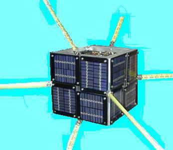
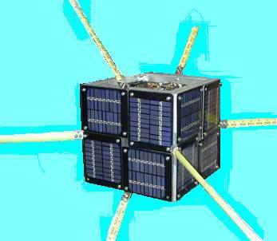
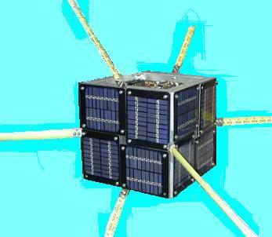
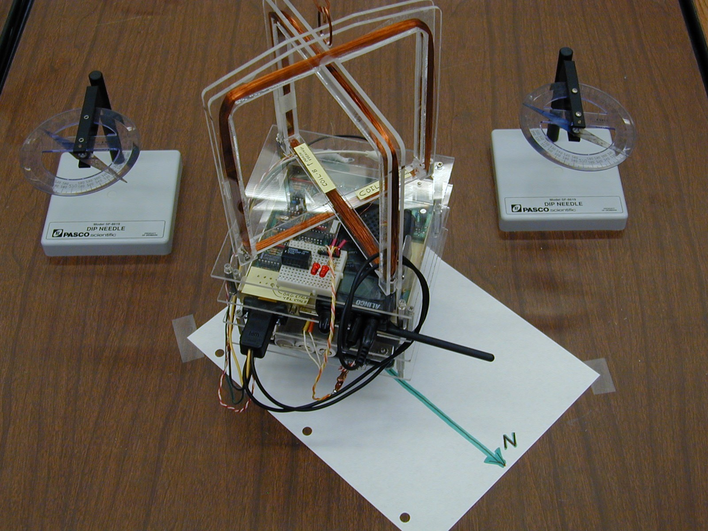
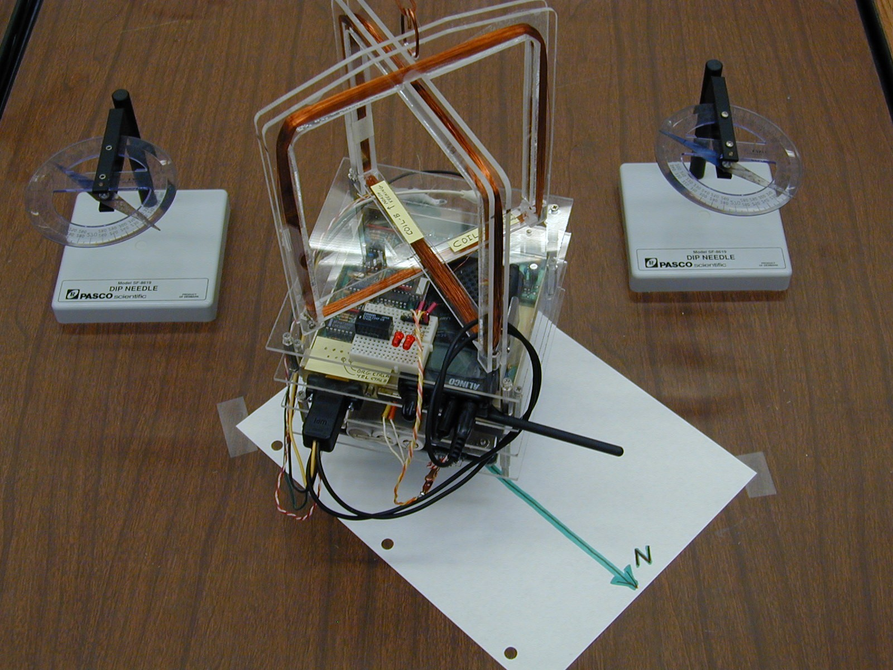
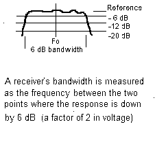
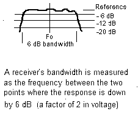

US Naval Academy LABsats 2008

US Naval Academy LABsats 2008

US Naval Academy Satellite Lab, Bob Bruninga, WB4APR
Dr. J Thinel, CDR Stevens


US Naval Academy LABsats 2008

Final LABsat Ops Lab.
<<== This last lab is a full up operations of these labsats scattered around the campus.

Download APRS-in-space Power Point presentation.
Download LABsat Review Power Point presentation.
LABsats: These labsats shown here were used from about 2004-2010 and were based on a Kantronics TNC plus various innexpensive amateur radio hardware and sensors to give students in the US Naval Academy's Aerospace labs various hands-on experiments with satellite technology at low cost. The photo above shows deputy NASA Administrator Admiral Steidle being briefed on the LABsat system. We use the LABsats to support about 33 lab periods covering a number of space design principles in our sophomore intro labs (EA204) and in our senior spacecraft design labs (EA467).
LAB Summary: The labs below are the actual labs in the fall of 2008. . Also there is a one-page-per-lab, conglomeration summary overview(doc) of all the learning elements extracted from the entire series as used in 2005. . See also the power points above.
We are also seeking a grant to develop a full lab course series for High Schools and other Universities download. But the following are representative labs:
LABSAT SYSTEM: The LABsat concept was developed at USNA beginning about 1998 to use innexpensive off-the shelf components for under about $600 each ($900 with discrete TX & RX), yet include RF hardware similar to what we used in our 5 actual spacecraft (PCSAT, PCSAT2, ANDE, RAFT, and MARScom) so that they could actually close the link from orbit in the Amateur Satellite Service. The labsats can not only serve as the final integration of all the modules of the seniors lab course, but they can also serve as rapid prototyping devices for testing modules and components for auxilliary payloads and applications. . With their full space-link budget comms system, they can be carried anywhere on the academy or out to 500 miles LOS and still be commanded for demos. Our next satellite project is Psat.
COMM SYSTEM: . The Telemetry, Command and Control system communicates at 1200 or 9600 baud using the standard AX.25 packet radio protocol that has flown on MIR, the Shuttle and ISS plus a dozen or more satellites in the Amateur Satellite Service (including 5 of our own). . In the Lab we typically use the $88 Alinco's for all packet commanding and telemetry, but use discrete TX and RX modules in the actual TX and RX portion of the labs. . Draft Tech Manual only a draft beginning, but has not been updated since 2005 and most of the improvements since have not been added yet.
 . . .
. . .

Room-to-Room Link Test: While this is not an actual lab, it is an essential test we require on all student satellite comm system projects. There is no such thing as a viable bench-top comm test with any value. The transmitter emitts 100,000,000,000,000 or a 100 million*million times more RF power than the receiver needs for a good link. It is impossible to get that separation on a desk top. So, our first level test is to put the transmtter in a faraday cage (an old metalic PC box) and include about 60 dB of attenuation in the cable plus ferrite chokes on all leads going into or out of the box (data or power). Then we place the TX box (above left) hundreds of feet away in another room and connect back to the receiver under-test (above right) via 200' of lossy RG-58 cable with 20 or 30 dB attenuators in the middle. Then the cable connects to a step attenuator at the receiver for making weak signal link tests. The huge physical separation makes sure there is no leakage around all the attenuators.
1 Mile Link Test: The final test of any flight units is the 1 mile full range test as shown at right. The satellite and grouind station are separated by about a mile and then 30 dB of attenuators are placed in the ground station coax line and in the satellite test item. This total attenuation summs to 60 dB which is the same thing as a range difference of 1000-to-1. If the communications works with this attenuation over 1 mile, then it proves it will work over 1000 miles without the attenuation.
An advantage of this test is that it permits full test of the antennas as well. Also, if there is true line-of-sight then the test should be pretty reliable except for ground-reflection gains and nulls. But these can be quickly assessed by raising and lowering the test antennas and looking for the peak and avoiding the null. You can assume the peak is no more than about a 3 dB ground gain.

IMAGING SYSTEM: All of the LABsats have a low cost ($75) camera on board
operating on the four video carriers at either
1200 or 2400 MHz, for a total of 8 independent LABsat images. .
These
self-contained cameras
not only make excellent imaging devices, but their
operation at L and S band make great microwave link sources and receivers for
antenna and link labs below. . Normally the cameras operate in the lab
with their OMNI antennas, but 4 mile range is easily achievable outside
using the parabolic reflector on the LABsat as shown to the
left and an 18" dish at the receiver as shown to the right. .
This is a challenge for the ADCS when the satellite is so far away
that the students have to use telmetry to determine and then command the
attitude in the blind to point it back to the ground station before they can
even see the image!.
STACKsats: The images below show two typical LABsat stack configurations. These show the momentum wheel and magnetorquing experiments for demonstrating attitude control. The Motor and the orthogonal X and Y torquing coils demonstrate actual attitude control using the Earths magnetic field. When hung from a string, students are able to change the attitude of the labsat, and, with the right pulsing of the coils, spin up or de-spin the spacecraft. . Other models can demonstrate propulsion with either Match-heads, Estes rockets, or Fans.
 

FLATsats: As shown in the 8 different models below, the LABsats can also be configured into a FLATsat configuration for the EPS Solar Panel System design Lab. In the FLATsat configuration, three Solar Panel sides of the spacecraft can be illuminated at once as is the typical illumination of a cube shaped satellite. During the design Lab, we have boxes of 8 different solar cell sub-panels of various voltages and currents. The students must design a power system that can be illuminated under a lamp which will power their LABsat including momentum wheel, while staying within the panel size allocated. Cost is also a parameter of the overall design challenge.

ELECTRICAL POWER SYSTEMS:
The LABsat is composed of several boards. The image below shows three of the LABsat
boards (the RF Transceiver board, a Solar Panel, and the Comand/Control/Telemetry
board). The single radio transceiver board was replaced with separate TX and
RX boards in 2005 so students could perform individual functionsl tests on these
modules. Other standard boards are the Battery
board, and experimental prototype board. The photo on the right shows how the Telemety
and Transceiver boards are used to make measurements during the Solar Power lab.

The drawing below shows how the LABsat telemetry system is typically used as a data collection device during experiments. In this case the 4 of the channels are being used to collect Solar Panel voltage and temperature, plus current and battery voltage and discharge current of the torque motor.

TRANSMITTERS: New in 2005 labs, the original $100 radio transceiver was replaced
with discrete TX and RX panels (at $200 each raising satellite costs to about $900 each)
so that students could measure and
peak the transmitter for peak power out and measure the antenna SWR. They also
observe and measure any harmonics or other spurious emissions. These emissions
are important in passing EMI testing. This experiment also has them plot the
temperature rise of the transmitter final PA amplifier so they learn the heat
involved in a 2W transmitter and how it is mostly concentrated in the final stage
and requires thermal design to get rid of it. . They use a FLIR camera to see
the temerature of the components.
RECEIVERS: On the new discrete receiver, students measure
the 10 dB SNR sensitivity and bandwidth as shown below. They measure the
noise power on the audio voltmeter and then increase the signal until they
achieve 10dB, and then 20 dB SNR. They then move the signal up and down
in frequency to measure the 6 dB bandwidth of the receiver.
 

STACK INTEGRATION: The next close up view of the magnetorquing experiment shows how the standard 6"x6" modules stack up to compose a LABsat. By having a common footprint, the students have greater freedom in the physical layout of their designs. In the attitude control lab, they have to arrange for a good center of gravity and calculate their moment of inertia. This view, from top down is composed of:


TELEMETRY: The block diagram of the Telemetry Command and control interface is shown below. The bidirectional serial bus allows unlimited expansion to other processors and experiments. This TC&C module is used as the foundation of most of the labsat experiments. It is identical to the 8 currently flown or manefest on USNA satellites.
To prepare the COTS packet modem for use as a Telemetry, Command and Control system, we make modifications to the circuitry and make various taps off of many of the microprocessor I/O lines. With these mods, the students can easily access the CPU telemetry inputs and command outputs. See details of the TNC mods.
LABsat telemetry consists of periodic packets containing a serial number followed by 5 comma delimited analog values in the range of 0 to 255. (see example). This file can be opened directly into EXCEL for display and/or conversion to specific units for display. If more than one LABsat is on the air, then the LSAT-SEP.EXE utility can be run on the combined file sepaarate out each individual labsat's telemetry into its own file for loading into EXCEL. The QBASIC source code is available.
SIGNALS AND MODULATION:
The students use the Transmitters and Receivers and Telemetry system to investigate both FDMA and TDMA systems. They observe and capture time domain waveforms and compare signals on sound-card spectrum analyzers as shown below. The FDMA multi- channel spectrum display is on the left and the TDMA waveform is on the right.

LABSAT GROUND STATIONS: The ground station for both our LABsats and our
USNA Satellites on orbit consists of a brief-case system containing a laptop,
and AX.25 packet radio modem and small radio. The one shown below uses the Kenwood
TH-D7 packet radio that has built-in TNC-modem for easy construction and is
suitable for actual comms with the spacecraft on orbit and in the lab. On the right
is a GSE laptop connected to our flight RAFT and MARScom satellites.


ATTITUDE CONTROL LABS: In addition to the momentum wheel and magnetorquing coils shown above, the attitude control lab also uses thrusters. The initial approach shown above uses match-head thrusters, but having a room full of students and boxes of matches is a bad mix. . The next thruster design used Estes rockets shown below, but during the third year, it flew off the support string and crashed and burned. . The 2008 version is an excellent final design that uses small CPU fans as thrusters.


The image shows the foam sat aligned with North (using the small permanent
magnet inserted on the +X face). The match-head Thruster was inserted on the lower left
-Y face and ignited. The moment of inertia is calculated and the resulting
angular velocity is used to calculate the force of the thruster. The dip needle
shows the orientation of the Earths Magnetic field in the lab.
Click for closeup of magnetorquing coils.

In 2006 we abandoned the match-motor tiny thrusters for a much more vigorous ESTES rocket motor on an actual LABsat as shown above. This satellite was hung outdoors but close to the lab window so it is easy to see. First the CW motor was fired to give the satellite a good spin. Then the CCW motor was fired and if they were close in performance, then the second motor would counteract the spin and return the satellite to rest in about 1 second. . With lots of smoke and fire of course.
Magnetic Stabilization: To help studnets visualize the attitudes of spacecraft with magnetic stabilization, I wrote a program to generate many views from our ground station such as the one below. This one shows that fixed magentic stabilization gives horizontal attitude to the south of us, becoming more vertical the further north. But perfectlyl predictible and reproducable on every pass. (See more views)

SERIAL DATA COMMUNICATIONS EXPERIMENT: In this lab, the students analyze the serial data output of a GPS unit and connect it to the LABsat command/control system to transmit GPS position data to the ground station. The data is then decoded and displayed on a local map of the Academy. Each GPS (since the experiment is conducted indoors) is pre-loaded with a simulated position. The screen shot below of the APRS display shows the positions reported by their GPS units and the callsigns the students gave their labsats for this experiment. The students are required to manually parse the data fields and then this display gives them feedback about their successful data transmission.

OTHER Experiments: Another advantage of the LABsat based experience for the students is that they can use it as the baseline for building and testing other sub components of their EA-470 satellite design work. In the photo below, a FLATsat model was used to test a string-cutter antenna deployment design for one of the early RAFT models. In this case, the students could concentrate on the mechanical and structural details and simply use the FLATsat as the control system. On the right, students experiment with a UHF helix antenna.

SATELLITE TRACKING: The USNA Satellite Lab maintains a track on all of our own satellites plus other university and interesting satellites. When passes occur during labs, students participate in ground station operations. In a number of experiments, the students have done the planning and scheduling of PCSAT2 and PCSAT1 commanding. (PCSAT2 Ops Lab), (Joint ops Planning Lab). The image below is used to help the students visualize the daily pass geometry of PCSAT2 over our station.

FLIGHT HERITAGE:
The LABsat hardware is derived from the actual flight hardware used on several
of the successful Naval Academy Satellite designs that have flown or are currently
manafest. These systems are similar and compatible to what has flown on the MIR,
ISS and the Space Shuttle for use by schools and universities around the world.
By using a common Telemetry Command and Control system, the independent
flight systems can actually be used in constellation with each other for
multiple satellite experiments. Also, their commonality encourage colaboration
with other schools making similar compatible systems.
USNA SATELLITES: A total of eight independent Telemetry Command and Control Systems similar to our labsats have flown or have been delivered for flight as shown below. Both PCsat, PCSAT2 and ANDE are dual systems, meaning they carry two complete systems each. The dual systems give redundancy, and also give multiple functionality. The RAFT and MARScom systems have single TC&C systems.
LABsat Drawings: Here are some of the documents that describe the LABsat details. These are not all inclusive, but are all that we have posted at this time...
You are visitor:
since 1 Dec 2004.
|
|
|


{kind=link}
{kind=link}
{kind=link}
{kind=link}
{kind=link}
{kind=link}